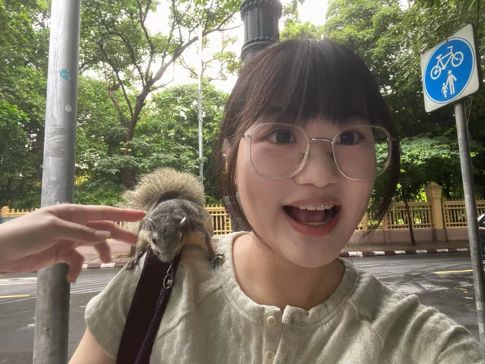

Welcome!
I am a graduate student in Computational Communication at Jinan University. My research focuses on deepfake-related misinformation, trust mechanisms, and accessible design for vulnerable populations such as older adults and individuals with intellectual disabilities. I combine qualitative coding, machine learning, and agent-based modeling to explore social risks and digital inclusion.